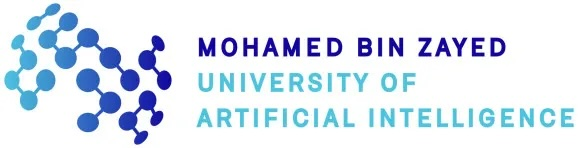
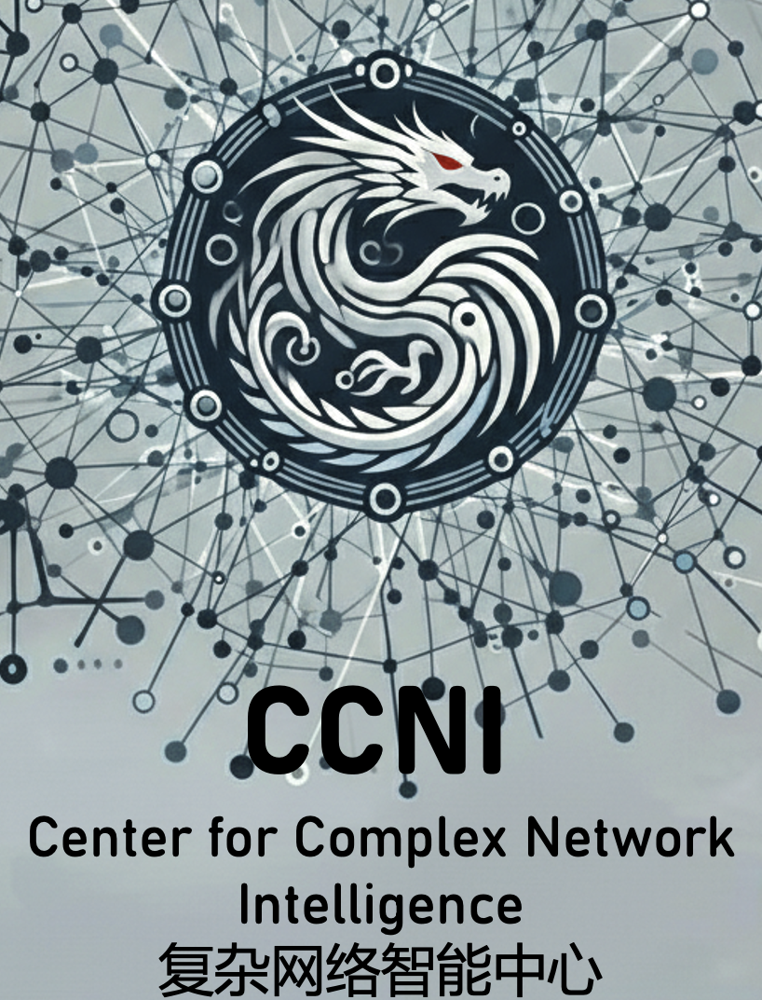
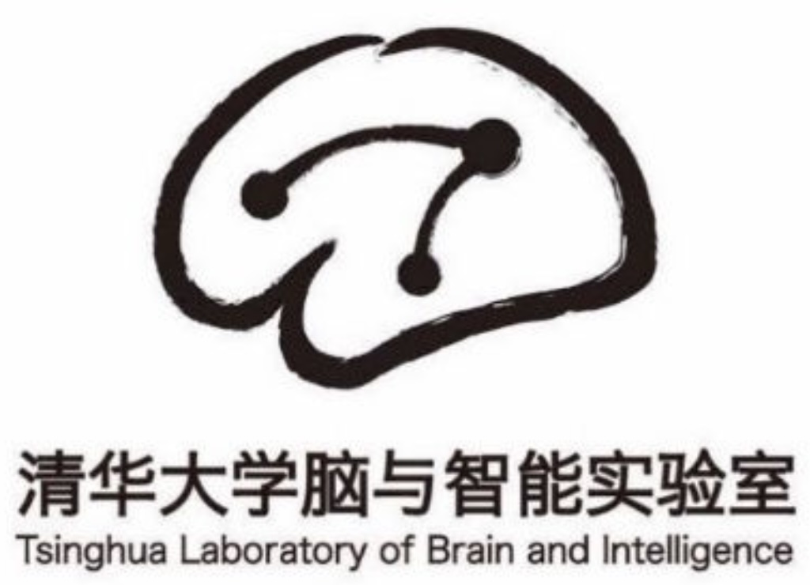
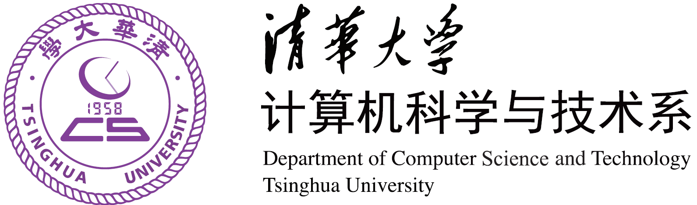

Job Opportunities
We advertise job opportunities related to the intersection of network science and artificial intelligence. If you have a position to advertise, please contact us at kalokagathos.agon@gmail.com or thomas0299@gmail.com.
Postdoctoral Fellow - Shuimu Fellowship
Institution:Center for Complex Network Intelligence (CCNI), Tsinghua Laboratory of Brain and Intelligence (THBI), Tsinghua University
Location: Beijing, China
Position Type:Postdoctoral Fellow (2-3 years)
Application Deadline: CCNI: March 13, 2026 (1st round) / September 13, 2026 (2nd round)
University: March 27, 2026 (1st round) / September 27, 2026 (2nd round)
Requirements: Under 35 years old and completed their Ph.D. within the past three years. Candidates specialized in AI, robotics, or Data Science are eligible for additional funding via the Huiyan program (a supplementary add-on to the Shuimu Fellowship).
Description: Research focus on brain-inspired artificial intelligence, complex systems and network science, efficient large-scale model training, and network topology and geometry.
How to Apply: Send email to kalokagathos.agon@gmail.com with a CV and a short summary of motivation.
More Information: Shuimu Tsinghua Scholar Program

Postdoctoral Associates, Senior Scientists, and PhD Students - AI for Precision Medicine and Therapeutics
Institution: Integrative Computational Network Biology Lab, Mohamed bin Zayed University of Artificial Intelligence (MBZUAI)
Location: Abu Dhabi, United Arab Emirates
Position Type:
- Postdoctoral Associate
- Senior Scientist
- PhD Student
Start Date: ASAP
Description: We are looking for talented and motivated Postdoctoral Associates, Senior Scientists and PhD students to join our research team in the field of AI for Precision Medicine and Therapeutics. They will work on developing Artificial Intelligence (AI) and network data science algorithms for mining molecular multi-omics and medical data to improve multiple tasks of precision medicine and discover new precision therapeutics. The successful candidates will work closely with our interdisciplinary team of researchers to advance the state-of-the-art. They will be uniquely positioned to work on the flagship Human Phenotype Project and Emirati Genome Project data. This position offers an excellent opportunity for career development, collaboration, tech-transfer, and impactful research in AI, Computational Biology and Precision Medicine and Therapeutics.
Qualifications:
- For PhD students: MSc in Computer Science, Mathematics, Physics, Bioinformatics, or a related quantitative field.
- For post-docs / senior scientists: PhD in Computer Science, Mathematics, Physics, Bioinformatics, or a related quantitative field.
- Strong background and expertise in data science, bioinformatics, network science, artificial intelligence, machine learning, deep learning, or related areas.
- Solid understanding of AI algorithms, models, and frameworks.
- Proficiency in programming languages commonly used in bioinformatics and AI research (e.g., Python, TensorFlow, PyTorch).
- Record of publications in top-tier conferences or journals in bioinformatics, AI, or related fields (for post-docs / senior scientists only).
- Strong problem-solving and analytical skills.
- Excellent written and verbal communication skills in English.
- Ability to work independently and collaboratively in a team environment.
- Demonstrated ability to manage and prioritize multiple tasks and projects.
Required Work and Related Experience: Good technical skills including at least several of the following: algorithms, data analysis, graph, network and complexity theory, scientific computing, statistics, machine learning, programming in C, C++, Python, a scripting language, and Matlab, using a parallel computing environment, bioinformatics, network biology, network medicine, network analytics, medical informatics.
How to Apply:
- PhD students apply at mbzuai.ac.ae/study/phd-programs/phd-in-computational-biology.
- Post-docs and senior scientists should email Prof. Przulj at natasa.przulj@mbzuai.ac.ae with a CV including a list of publications, cover letter, list of references, and all university transcripts.
Contact: Prof. Natasa Przulj, natasa.przulj@mbzuai.ac.ae

Sponsors


